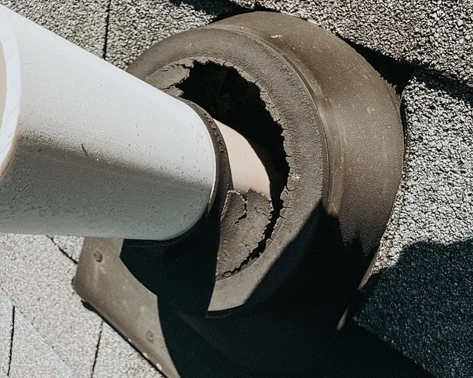

Roof repair
Even a small leak or damaged shingle can quickly turn into costly interior damage. We deliver long-lasting repairs, not temporary fixes.
- Leaky roof repair at the source
- Missing, cracked, curled, or wind-damaged shingles
- Flashing, chimney and vent repairs
- Storm and wind damage
- Nail pops, small gaps and minor shingle issues
Most repairs are backed by a 1-year repair warranty.
